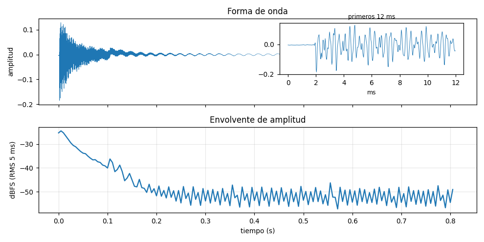
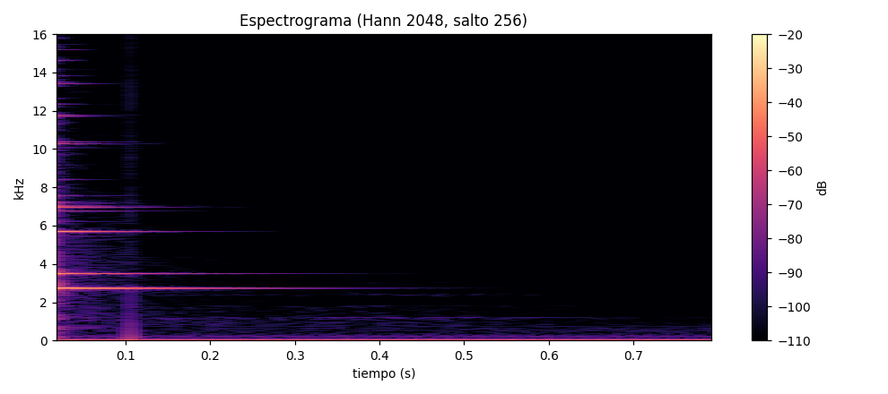
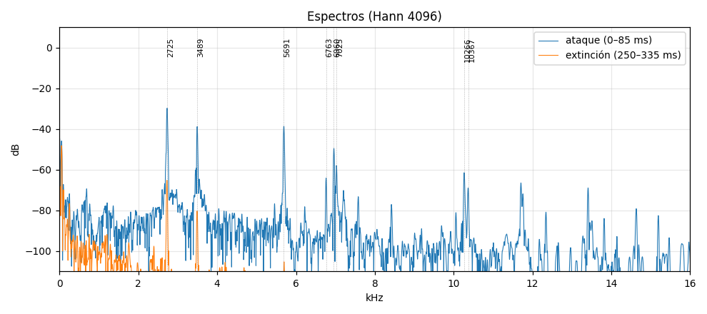
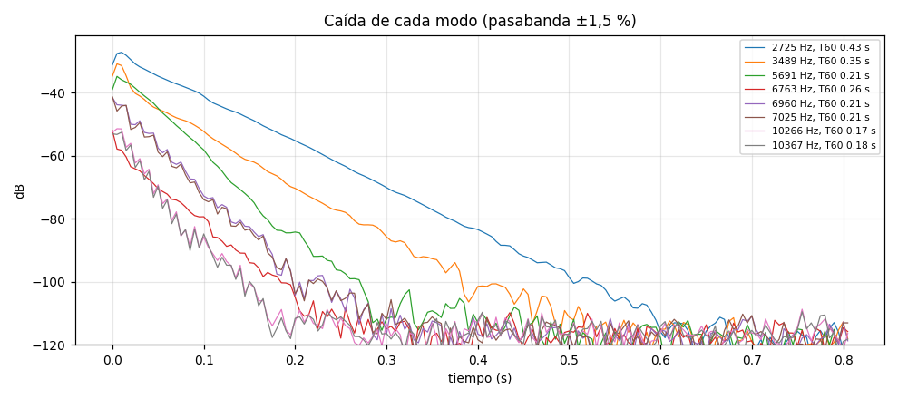
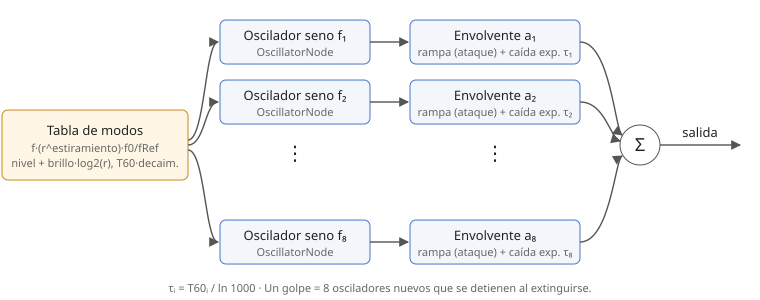
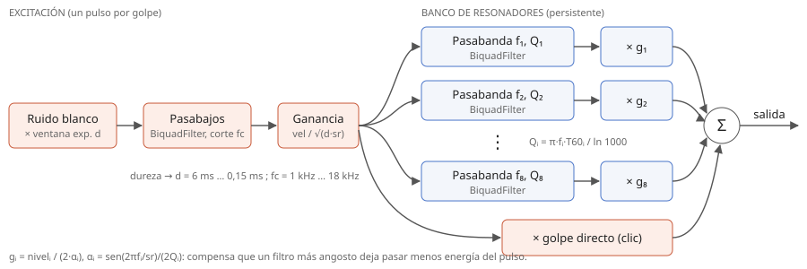
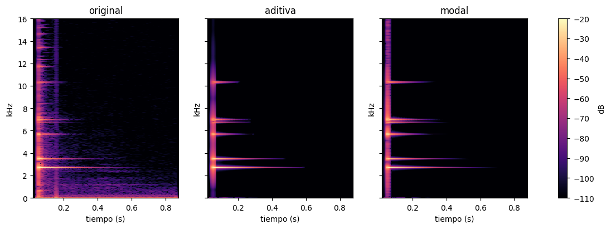
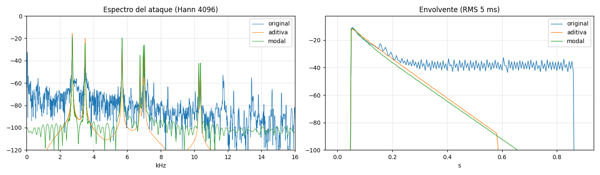
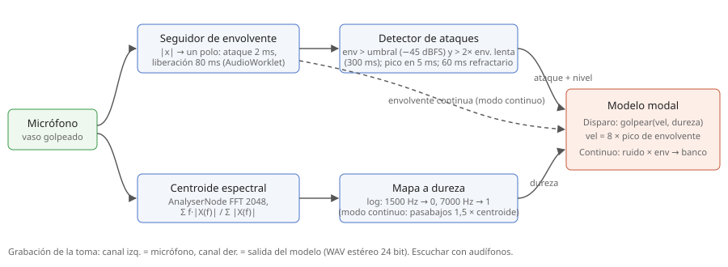

T2 — MÉTODOS DE SÍNTESIS
IEE2003 Orquesta de Laptops UC · Segundo semestre 2026 · Fuente: un golpe a un vaso de vidrio · Métodos: síntesis aditiva y resonadores modales (ruido filtrado por un banco de pasabandas).
Parte 1 · La fuente: cómo suena y de qué está hecha
1.1 La grabación
vaso-golpe.wav · 48 kHz, 24 bit, mono · 0,90 s
- Micrófono: micrófono del headset beyerdynamic, a unos 2–3 cm del vaso.
- Recinto: sobre el escritorio, en una pieza.
- Excitación: golpe en el costado del vaso, a 3/4 de su altura, con el mango de madera de un cepillo (elegido porque producía un sonido más estándar), con el vaso apoyado en la mesa.
- Registro: OBS Studio (48 kHz); se grabaron 11 golpes seguidos y se eligió el más fuerte (en 7,90 s), recortado a 0,90 s y llevado a mono (los dos canales eran prácticamente idénticos, correlación 0,999) sin otro procesamiento. OBS guarda el audio en AAC, así que el archivo original tiene compresión con pérdida; el WAV entregado es su decodificación sin cambios.
1.2 Descripción auditiva (escrita escuchando, antes de mirar el análisis)
Rápido: sube rápidamente al peak y después resuena bien poco; es seco y de término rápido. Si fuera una nota, sería considerablemente aguda. Brillante y limpio: un solo golpe del vaso y la resonancia de este.
Escrita por el estudiante, escuchando, antes de ver el análisis.
1.3 Análisis
Herramienta: Python (NumPy, SciPy, Matplotlib), script analisis/analisis.py.
Todas las figuras usan los mismos ajustes, y los mismos se aplican después a los modelos.
- Espectrograma: ventana Hann de 2048 muestras (42,7 ms), salto de 256 (5,3 ms). La resolución en frecuencia es de 23,4 Hz, suficiente para separar los pares de modos cercanos (6960 y 7025 Hz están a 65 Hz). Una ventana de 512 los junta; una de 8192 (170 ms) dura casi lo mismo que todo el sonido audible y borra el ataque.
- Espectros instantáneos: Hann de 4096 (85 ms) justo después del ataque (0–85 ms) y en la extinción (250–335 ms).
- Envolvente: RMS en ventanas de 5 ms. Caída de cada modo: pasabanda de ±1,5 % alrededor del modo, envolvente y recta ajustada en dB; la pendiente da el T60.




| Modo | Frecuencia | Razón con el principal | Nivel inicial | T60 |
|---|---|---|---|---|
| 1 (principal) | 2725 Hz | 1,000 | 0 dB | 0,43 s |
| 2 | 3489 Hz | 1,281 | −3,7 dB | 0,35 s |
| 3 | 5691 Hz | 2,089 | −7,7 dB | 0,21 s |
| 4 | 6763 Hz | 2,482 | −24,8 dB | 0,26 s |
| 5a / 5b (par) | 6960 / 7025 Hz | 2,554 / 2,579 | −14,4 / −14,2 dB | 0,21 s |
| 6a / 6b (par) | 10266 / 10367 Hz | 3,768 / 3,805 | −24,3 / −25,4 dB | 0,17 / 0,18 s |
1.4 Explicación: qué rasgo del análisis da cuenta de qué se oye
| Lo que se oye (1.2) | Lo que lo explica en el análisis |
|---|---|
| "Sube rápidamente al peak" | La onda llega a su máximo en menos de 1 ms; el contacto aporta un ruido de banda ancha de ~5 ms que se funde con el ataque. |
| "Resuena bien poco, seco, de término rápido" | T60 de solo 0,17–0,43 s, y en ~0,2 s el vaso ya cayó ~25 dB, hasta el ruido de fondo de la grabación. El vaso apoyado en la mesa se amortigua por la base. |
| "Considerablemente aguda" | Modo principal en 2725 Hz (cerca de fa7), y nada tonal bajo 2,7 kHz. |
| "Brillante" | Modos fuertes en 3,5, 5,7 y 7 kHz (solo 4 a 15 dB bajo el principal) y hasta 10,4 kHz. |
| "Limpio, un solo golpe y su resonancia" | Pocos modos, bien separados, con caída exponencial simple; el zumbido de 50 Hz está a −46 dBFS, 35 dB bajo el pico, y casi no se percibe. |
En detalle:
- Altura y carácter "de vidrio". Casi toda la energía está en un modo de 2725 Hz (entre mi7 y fa7, unos 43 cents bajo fa7). Los demás modos están en razón 1 : 1,28 : 2,09 : 2,48 : 2,55 : 3,77, que no es una serie armónica (sería 1 : 2 : 3 : 4…). Por eso se oye una altura, la del modo principal, pero no un tono "de instrumento": los otros parciales no se funden con ella.
- Brillo. Todo el contenido tonal está sobre 2,7 kHz y hay modos hasta 10,4 kHz; bajo 2 kHz no hay nada tonal, solo ruido. Es un sonido agudo y brillante aunque el modo principal no sea muy alto.
- Ataque instantáneo. La onda pasa de silencio a su máximo en menos de 1 ms (recuadro de la primera figura). En el espectrograma, el ataque es una franja vertical que llega hasta 16 kHz: es el ruido del contacto con el objeto que golpea, de unos 5 ms.
- Extinción que se oscurece. Cada modo cae en forma exponencial (recta en dB), y los agudos caen más rápido: T60 de 0,43 s a 2725 Hz, 0,21 s a 5,7–7 kHz y 0,17 s a 10,3 kHz. En el espectro de la extinción (250 ms) solo queda el modo principal. El sonido empieza brillante y termina como un tono casi puro.
- Pares de modos. 6960/7025 Hz y 10266/10367 Hz son modos que en un vaso perfecto serían uno solo. La pequeña asimetría del vaso real los separa, y al sonar juntos pulsan a 65 y 101 Hz. Eso agrega una aspereza en los agudos durante el ataque.
- Ruido. Hay tres fuentes: (1) el contacto, al inicio y en todo el espectro; (2) un segundo contacto o rebote cerca de 105 ms, visible como un pequeño salto en la envolvente; (3) un zumbido de 50 Hz de la red eléctrica, a −46 dBFS, constante. Desde unos 200 ms, la envolvente total deja de bajar porque lo que se mide ya es ese zumbido, no el vaso. Esto es de la grabación, no del vaso: los modelos no lo imitan.
Videos del curso: Módulo 1, Timbre y estructura armónica (parciales armónicos e inarmónicos) y Representación gráfica: tiempo vs frecuencia; Módulo 2, Envolventes; Módulo 4, Síntesis espectral: DFT y FFT y Síntesis espectral: ventanas y proceso (la relación entre el largo de la ventana y la resolución en tiempo y en frecuencia).
Parte 2 · Un sonido, dos métodos
Los dos modelos leen la misma tabla de modos (modelos/modos.js), que escribe el script de
análisis. La grabación no se usa como audio en ninguno. Los dos corren en tiempo real con la Web Audio API, en
modelos/index.html. La diferencia está en cómo llega cada uno a esos modos.
A · Síntesis aditiva
Construye el espectro componente a componente: un oscilador sinusoidal por modo, cada uno con su envolvente (subida lineal y caída exponencial con su propio T60). Lo que se escucha es exactamente la tabla; no hay nada más.

| Parámetro | Rango | Unidad | Efecto |
|---|---|---|---|
| Frecuencia del modo principal | 200–8000 | Hz | Transpone todos los modos y conserva sus proporciones. Medido: 2725. |
| Decaimiento | 0,1–10 | × T60 medido | Alarga o acorta todos los modos: más largo suena a campana, más corto a madera. |
| Brillo | −24 a +12 | dB/octava | Sube o baja los modos agudos respecto del principal. |
| Estiramiento | 0,5–1,5 | exponente k | Cada razón r pasa a rk: cambia las proporciones entre modos, es decir, el "material" del objeto. |
| Ataque | 0–200 | ms | Tiempo de subida de cada parcial: 0 es golpe seco, sobre 50 ms suena frotado. |
Videos: Módulo 4, Síntesis aditiva; Módulo 2, Osciladores y tablas de ondas y Envolventes.
B · Resonadores modales (ruido → banco de filtros)
Obtiene el espectro de forma indirecta. Un pulso de ruido muy corto (el "golpe") entra a un banco de filtros pasabanda muy angostos, uno por modo. Cada filtro resuena en su frecuencia y su ancho de banda fija cuánto dura: Q = π·f·T60 / ln 1000 (Q ≈ 370 para el modo principal). Es un modelo físico simplificado, porque cada filtro de dos polos se comporta como un oscilador amortiguado (masa-resorte). El sonido aparece cuando algo lo excita, y la forma de la excitación cambia qué modos suenan. Usa filtros digitales como parte del método.

| Parámetro | Rango | Unidad | Efecto |
|---|---|---|---|
| Frecuencia del modo principal | 200–8000 | Hz | Transpone el centro de todos los filtros. |
| Decaimiento | 0,1–10 | × T60 medido | Escala el Q de cada filtro: Q alto da una resonancia larga y angosta. |
| Dureza del golpe | 0–1 | — | Largo del pulso (6 ms → 0,15 ms) y corte de su pasabajos (1 → 18 kHz). Un golpe duro excita los modos agudos. |
| Brillo | −24 a +12 | dB/octava | Ganancia de cada resonador según su frecuencia. |
| Golpe directo | 0–1 | — | Cuánto del pulso se oye sin pasar por los filtros: el "clic" del contacto. |
Videos: Módulo 3, Filtros selectivos en frecuencia; Módulo 4, Modelamiento físico; Módulo 4, Síntesis espectral (la idea de moldear un espectro rico).
La comparación
Los tres a la misma sonoridad, no al mismo pico: −22,9 LUFS (ITU-R BS.1770, ponderación K, medido sobre 0,85 s desde el ataque). El nivel se bajó lo justo para que ninguno pase de −1 dBFS. La grabación necesita +13,6 dB, la aditiva +2,0 dB y la modal −3,9 dB.
Los tres seguidos: WAV: original · aditiva · modal · los tres seguidos


Qué logra y qué no cada método, y por qué
Lo que ambos logran. La altura, el brillo y el oscurecimiento durante la extinción. Están en la tabla de modos (frecuencias, niveles y un T60 por modo), y ambos métodos la respetan. Las envolventes de los tres casi coinciden durante los primeros 200 ms. Después, la del original se queda plana por el zumbido, y la de los modelos sigue bajando: ese tramo ya no es el vaso.
Aditiva: lo que no logra. Suena demasiado limpia. Le falta el ruido del contacto, porque un oscilador sinusoidal solo puede producir energía en su frecuencia, y el clic es energía repartida en todo el espectro durante 5 ms. Para tenerlo habría que agregar un componente estocástico: ruido con su propia envolvente y filtrado, como en los modelos "senos + ruido". También le faltan los modos débiles sobre 11 kHz que no entraron en la tabla (se ven en el espectro del ataque en 11,7, 13,4 y 14,6 kHz); cada modo es un oscilador más y hay que decidir dónde cortar. Y cada golpe es independiente: si se golpea de nuevo mientras suena, los osciladores nuevos se suman a los viejos sin interactuar.
Modal: lo que logra además. El pulso de ruido pasa en parte directo (el clic) y en parte por los filtros. Alrededor de cada modo hay una "falda" de ruido filtrado (curva verde del espectro del ataque) que la aditiva no tiene y que se parece más al original. Las amplitudes relativas de los modos ya no dependen solo de la tabla, sino también del espectro del golpe: un pulso blando (largo, con pasabajos) casi no excita los modos agudos. Así funciona un objeto real golpeado con algo más blando. Y como los filtros guardan su estado, un segundo golpe se suma a la vibración que ya existe con su fase, como en un vaso real.
Modal: lo que no logra. El clic es ruido blanco filtrado y no tiene la forma del contacto real (el rebote de los 105 ms no aparece). Cada resonador de dos polos solo puede caer en forma exponencial con un T60 fijo, igual que la aditiva, así que ninguno de los dos imitaría un modo que cambie de frecuencia o de amortiguamiento en el tiempo. Y en este método no se controla la amplitud de un modo en forma directa: depende de la ganancia del filtro, de su Q y del golpe. Por eso hubo que compensar la ganancia (g = nivel / 2α) para que un modo con Q alto no quedara más débil.
Cuál resultó más adecuado. El modal. Para una fuente que es un objeto que resuena cuando lo golpean, el modelo que separa excitación y resonador tiene el mismo principio que la fuente. Eso le da sin esfuerzo el clic, la dependencia de la dureza y la interacción entre golpes. La aditiva es más precisa en lo que la tabla describe, pero solo hace eso: para cada rasgo nuevo hay que agregar componentes a mano. Eso dice algo de cada método: la aditiva sirve para reproducir un espectro ya conocido, y la modal sirve para un objeto que se toca de distintas maneras.
Videos: Módulo 4, Síntesis aditiva y Modelamiento físico; Módulo 3, Filtros selectivos en frecuencia.
Parte 3 · Más allá del original
parte3-render.wav · 72 s · producido con los dos modelos
(botón "Renderizar" de la página de modelos o modelos/render_headless.py; el recorrido está en render.js).
| Tiempo | Sección |
|---|---|
| 0:00 | Aditiva: el vaso tal como se midió |
| 0:04 | Aditiva: decaimiento ×1 → ×8 |
| 0:12 | Aditiva: estiramiento 0,6 → 1,4 (decaimiento ×3) |
| 0:18 | Aditiva: brillo −18 → +9 dB/oct |
| 0:23 | Aditiva: ataque 0 → 150 ms |
| 0:28,5 | Aditiva: vaso transpuesto a 330–660 Hz (melodía) |
| 0:34 | Modal: el vaso tal como se midió |
| 0:38 | Modal: dureza 0 → 1 |
| 0:44 | Modal: decaimiento ×0,2 → ×10 (Q de los filtros) |
| 0:52 | Modal: golpe directo 0 → 1 |
| 0:57 | Modal: redoble acelerando sobre resonadores largos |
| 1:03 | Modal: vaso transpuesto a 220 Hz, golpe blando |
Predecir, escuchar, explicar
Las predicciones son del estudiante y se hicieron antes de escuchar el render. Para cada cambio eligió entre dos resultados posibles (las alternativas las planteó la IA; la elección es suya). La columna "Medido en el render" sale de medir cada golpe del WAV: duración hasta caer 40 dB, centroide espectral (primeros 170 ms), picos principales y momento del máximo.
| Cambio | Predicción | Medido en el render | ¿Acertó? Explicación |
|---|---|---|---|
| A · decaimiento ×1 → ×8 (0:04) | Suena más a campana. | Duración (−40 dB) 0,28 → 0,55 → 1,08 → más de 1,6 s. Mismos picos (2724, 3492, 5689, 7025 Hz). Centroide 3773 → 4292 Hz. | Sí. Al multiplicar todos los T60, los modos agudos también duran más y el sonido sigue brillante mucho tiempo, como una campana o una copa fina. La nota no cambia porque las frecuencias son las mismas. Sigue siendo vidrio, porque las razones entre modos no cambian. |
| A · estiramiento 0,6 → 1,4 (0:12) | Cambia el material, no la nota. | El modo principal se queda en 2724 Hz. Los demás se mueven: el 2.º va de 3158 a 3849 Hz y el 3.º de 4236 a 7640 Hz. Centroide 3408 → 5089 Hz. | Sí. rk deja fijo r = 1, así que la nota percibida (el modo principal) no se mueve. Con k = 0,6 los modos se juntan (1 : 1,16 : 1,55) y el timbre se vuelve más compacto y oscuro. Con k = 1,4 se separan (1 : 1,41 : 2,80) y suena más metálico y brillante. Las razones entre parciales son las que definen el "material" (Módulo 1, Timbre y estructura armónica). |
| A · brillo −18 → +9 dB/oct (0:18) | Más brillante. | Centroide 3012 → 5298 Hz. De −18 a −4,5 dB/oct casi no cambia (3012 → 3195 Hz). El último golpe es 6 dB más fuerte. | Sí, con un matiz. Con valores negativos el cambio se oye poco, porque los agudos ya eran débiles y duran poco. Con +9 dB/oct el modo de 5690 Hz queda unos 2 dB sobre el principal y la nota se vuelve ambigua: el brillo puede cambiar qué modo se oye como "la nota". |
| A · ataque 0 → 150 ms (0:23) | Sigue sonando a golpe. | El máximo llega a los 0, 45, 100 y 150 ms. Los picos y la duración no cambian. | En parte. Con 45 ms todavía se reconoce un golpe suave. Con 100–150 ms el sonido "crece" antes de apagarse, y eso se oye como algo frotado (una copa frotada) o como un sonido al revés. El oído reconoce un golpe por un ataque de pocos milisegundos (Módulo 2, Envolventes). Cuando la subida dura tanto como un tercio de la caída, deja de oírse como impulso. |
| B · dureza 0 → 1 (0:38) | Cambia más el brillo que el volumen. | Centroide 2949 → ~4300 Hz, y el nivel pico sube 17 dB (−34 → −18 dB). | No del todo: cambian los dos, y el volumen cambia mucho. Un golpe blando es un pulso largo con pasabajos en ~1 kHz, que pone casi toda su energía bajo 2 kHz. Este vaso no tiene ningún modo ahí (el primero está en 2725 Hz), así que los filtros reciben muy poca energía: el sonido sale más oscuro y además mucho más débil. En un objeto con modos graves, la dureza cambiaría sobre todo el brillo. |
| B · decaimiento ×0,2 → ×10, Q de los filtros (0:44) | Dura más. | Duración 0,06 → 0,20 → 0,72 → más de 1,8 s. Mismos picos. | Sí. El ancho de banda de un pasabanda y su tiempo de resonancia son inversos (Q = π·f·T60 / ln 1000). Con ×0,2 el filtro es ancho y se oye un "toc" corto, casi sin nota. Con ×10 es angostísimo y suena como una campana larga. La altura no cambia porque el centro de los filtros no se mueve (Módulo 3, Filtros selectivos en frecuencia). |
| B · golpe directo 0 → 1 (0:52) | El vaso suena más brillante. | Centroide sin tendencia (4558, 3944, 3592, 3901, 3701 Hz). Duración igual (~0,27 s). Solo cambia el primer milisegundo. | No. El pulso directo dura menos de 1 ms. Se oye como un "clic" de contacto separado, delante de la resonancia, y no como un vaso más brillante. La resonancia, que es lo que se oye como "el vaso", no cambia porque los filtros reciben lo mismo. El brillo del vaso depende de cuánto suenan sus modos agudos, y esta perilla no los toca. |
Parámetros determinantes
- Aditiva, el que más cambia: decaimiento. Lleva el sonido de vaso seco (0,3 s) a campana (más de 1,6 s), porque el T60 de cada modo es lo que el oído usa para decidir si el objeto es "duro y resonante" o "amortiguado". El estiramiento le sigue, porque cambia el material.
- Aditiva, el que casi no cambia: brillo hacia valores negativos (y el ataque bajo ~5 ms). Bajar modos que ya eran débiles y cortos casi no cambia el resultado: el centroide solo baja de 3195 a 3012 Hz entre −4,5 y −18 dB/oct.
- Modal, el que más cambia: decaimiento (Q). Pasa de un "toc" sin nota a una campana. Le sigue la dureza, que en este vaso cambia mucho el volumen porque decide cuánta energía del golpe cae donde hay modos.
- Modal, el que casi no cambia: golpe directo. Agrega un clic de menos de 1 ms y no modifica la resonancia, que es la mayor parte del sonido.
Parte 4 · El modelo tocado por la fuente
El modelo modal se toca con el mismo vaso, que suena frente al micrófono (con audífonos). La cadena de escucha calcula dos descriptores:
- Envolvente de amplitud (seguidor de un polo: ataque 2 ms, liberación 80 ms) y, a partir de ella, los ataques. Hay un ataque cuando la envolvente supera −45 dBFS y duplica (+6 dB) a una envolvente lenta de 300 ms. Luego se espera 5 ms para medir su pico y se ignoran nuevos ataques por 60 ms.
- Centroide espectral (FFT de 2048 en el momento del ataque), llevado en escala logarítmica a la dureza del golpe: 1500 Hz → 0, 7000 Hz → 1. Un golpe al vaso con algo duro, o en el borde, produce un modelo más brillante.
Hay dos modos. En Disparo, cada golpe al vaso golpea el modelo con velocidad = pico de la envolvente y dureza = centroide. En Continuo, el ruido multiplicado por la envolvente, muestra a muestra, entra directamente a los filtros; así el modelo puede sonar frotado o raspado, y sigue el gesto en vez de reaccionar solo a los ataques.

Videos: Módulo 2, Envolventes; Módulo 4, Síntesis espectral: DFT y FFT (centroide); videos introductorios de Pure Data y Max y Módulo 5, Construcción de un sintetizador (control de un sintetizador por una señal externa).
Código y cómo reproducir
| Archivo | Qué es |
|---|---|
| modelos/index.html | Página que corre los dos modelos y la cadena de escucha en tiempo real. |
| modelos/synth.js | Modelo aditivo (golpeAditiva), modelo modal (class Modal), parámetros, render y WAV. |
| modelos/escucha.js | Parte 4: seguidor de envolvente, detector de ataques y grabador (AudioWorklet), centroide. |
| modelos/render.js | Recorrido del render de la Parte 3 (secciones y golpes, editables). |
| modelos/modos.js | Tabla de modos medida, escrita por el análisis. |
| modelos/render_headless.py | Produce audio/golpe-*.wav y el render sin abrir el navegador. |
| analisis/analisis.py | Figuras de la Parte 1, tabla de modos y comparación con sonoridad igualada. |
Entorno probado: Microsoft Edge 156.0.4314.58 en Windows 10 (Chrome usa el mismo motor); Python 3.13 con NumPy, SciPy, Matplotlib y Playwright. La página funciona abierta desde el portafolio (https) o como archivo local (doble clic); el micrófono no funciona en direcciones http que no sean localhost.
Para reproducir los audios entregados, desde la carpeta T2-metodos-de-sintesis:
pip install numpy scipy matplotlib playwright python analisis/analisis.py # figuras de la fuente y modelos/modos.js python modelos/render_headless.py # audio/golpe-aditiva.wav, golpe-modal.wav, parte3-render.wav python analisis/analisis.py --comparar # audio/comparacion/*.wav y figuras de comparación
Lo mismo se puede hacer a mano: en modelos/index.html, "Valores medidos" y "Descargar WAV de un golpe" en cada modelo, y "Renderizar" en la Parte 3.
Declaración de uso de IA
| Herramienta | Propósito |
|---|---|
| Claude (Anthropic), en la app de escritorio de Claude, con acceso a la carpeta del proyecto | Leer el enunciado y proponer un plan; extraer el golpe de la grabación; escribir el script de análisis y medir los modos; implementar los dos modelos, la cadena de escucha y el render en Web Audio; igualar sonoridad; hacer los diagramas; redactar las explicaciones de la Parte 1 (apartado 1.4), la comparación y esta página. |
Prompts relevantes:
- «te deje el pdf dentro de Orquestra de laptops/T2 puedes leerlo y hacerlo»
- «Cualquier decision preguntame cosas de gusto o preferencia»
- «acabo de grabar con OBS un sonido de repetidos golpes a un vaso de vidrio, podrias usarlo, usa esos metodos» (después de que la IA propusiera aditiva + resonadores modales para un golpe a vidrio)
Escrito sin IA, como exige el enunciado: la descripción auditiva de la Parte 1 y las predicciones de la Parte 3. Para las predicciones, la IA planteó dos resultados posibles por cada cambio y el estudiante eligió uno antes de escuchar. Las explicaciones de la tabla las redactó la IA a partir de mediciones del render. La grabación y la toma en vivo las hizo el estudiante. Todo lo demás fue revisado por el estudiante, que responde por ello.